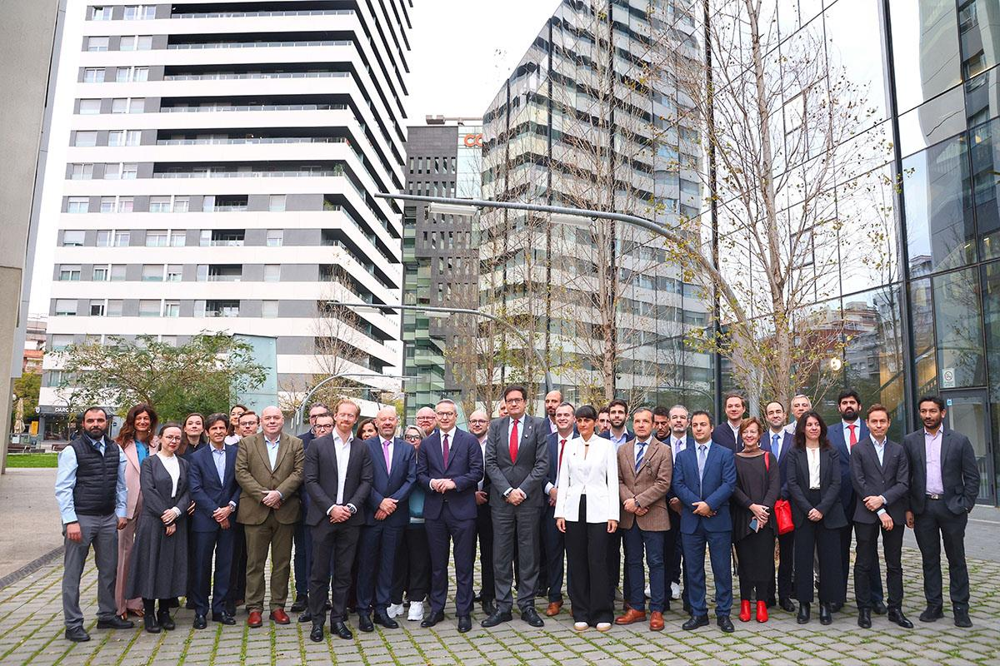

Espagne: 100 M€ for l'IPCEI-AI, a strong sovereignty signal
Spain’s €100 million announcement for projects linked to IPCEI-AI confirms a scale shift: European sovereign AI no longer relies only on political intent, but on concrete and coordinated investment commitments across member states.

1. Pourquoi cette news est structurante
The main signal is twofold: targeted funding and cross-border logic. By linking this budget to IPCEI-AI, Madrid supports projects capable of moving from prototype to first European industrial deployment. For companies, this increases the medium-term probability of accessing AI building blocks less dependent on extra-European ecosystems.
2. Impact on an enterprise roadmap
IT leadership teams must anticipate an evolution in technology partnerships: more EU consortium opportunities, more traceability requirements across the value chain, and stronger pressure to prove cloud/model reversibility. This is not only a regulatory topic; it becomes industrial, with production deployment timelines.
3. Decisions a prendre dans the 60 jours
Three actions provide quick advantage: map use cases eligible for an IPCEI-AI logic, identify potential European partners (vendors, integrators, labs), and prepare a reference architecture focused on auditability (data, model, inference, supervision). This preparation helps capture future funding windows without degrading governance.
Build a 2026-2028 sovereign AI roadmap aligned with IPCEI-AI dynamics and European compliance constraints.
Start sovereign framing